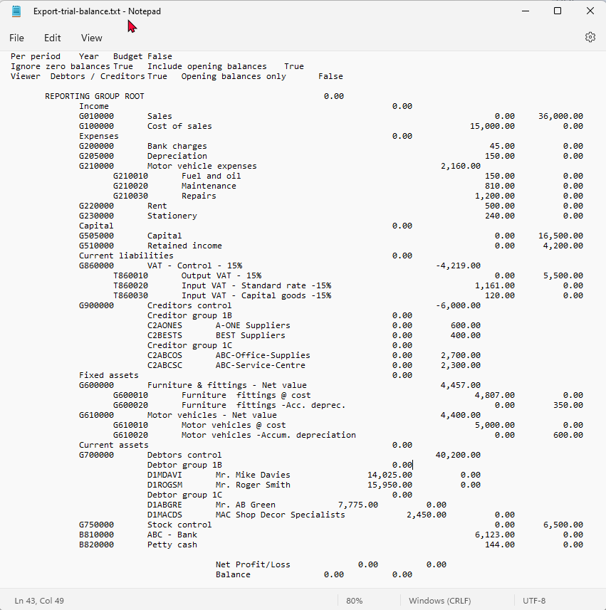
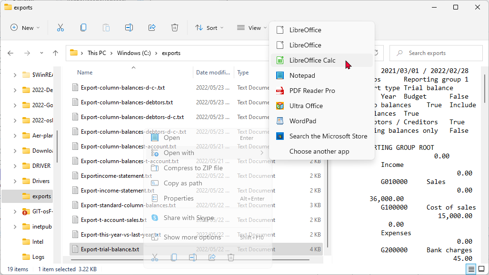
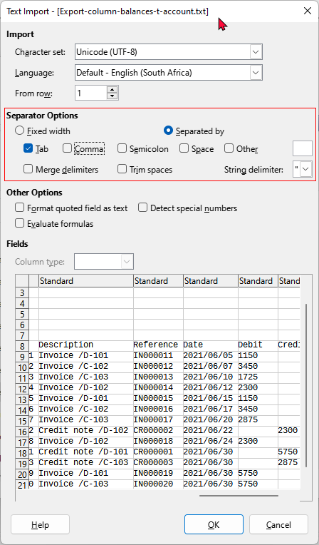
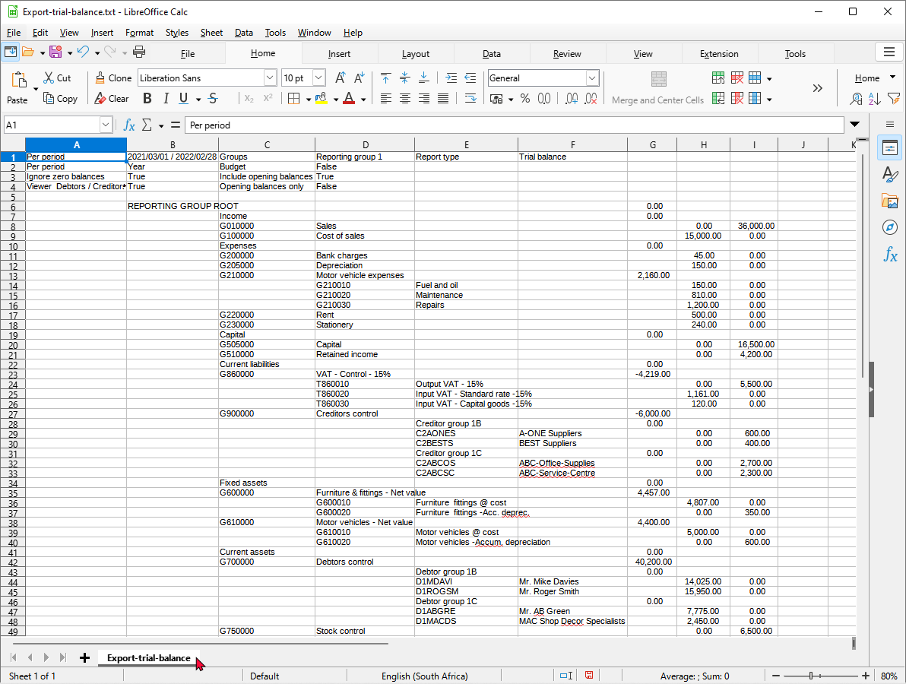

Ledger analyser - Open exported files in other Spreadsheet applications
There are six (6) report types, which may be selected (i.e. Trial balance, Income statement, Balance sheet, Standard column balances, Budget vs actual and This year vs last year) which may be generated in the Ledger analyser and exported to spreadsheets.
|
|
When printing reports on the Ledger analyser, it is recommended that the Export button are used to export the reports as a Comma Separated Values (*.csv) file, instead of saving it as a meta file form the "Reportman print preview" screen ( |

To create an Export file in the Ledger analyser:
- On the Reports ribbon, select Ledger analyser 1 or Ledger analyser 2.
- Select the report type. Once finished, selecting your options, click on the Report button to build, update or refresh the data for the selected report type on the "Ledger analyser" screen.
- Click on the Export button. This will launch the "Save as" screen.

- Select the folder in which you wish to save the file.
- The default file name will be "Export.txt". Overtype this with your own name.
|
|
If you do not enter and save the Export.txt file name, you may replace existing (previously exported) files. Of an existing exported file is opened, and you are trying to save a export file with the same name, a similar error message as the following will be displayed: Cannot create file "D:\exports\Export.txt". The process cannot access the file because it is being used by another process. |

- Click on the Save button. This will automatically open (launch) the file in the program associated with the Comma Separated Value file type (e.g. Microsoft Excel, LibreOffice Calc, OpenOffice Calc, Ultra Office, etc.).
Opened in a Text editor - Notepad
An example, of the "Export.txt" file opened in your systems default program associated with *.txt files (e.g. "Notepad") is as follows:

Open the Export.txt file in a spreadsheet
|
|
If the Comma Separated Value file type (*.csv) file type for the exported file does not automatically launch in a spreadsheet program; or the incorrect program, you may change this. To do this; you need to:
|

Locate the "Export.txt" file in your System's File Explorer.

|
|
If LibreOffice and not LibreOffice Calc is selected, the "Export.txt" file will open in LibreOffice Writer as a text file. |

In this example, Open with > LibreOffice Calc is selected. The "Text Import" screen is displayed:

|
|
Separator options - Separated by Tab is the only option which should be selected for the trial balance. This may differ for some other report types. |
Select your options and click OK. The selected "Export.txt" file will be opened in LibreOffice Calc spreadsheet.
Spreadsheet view
